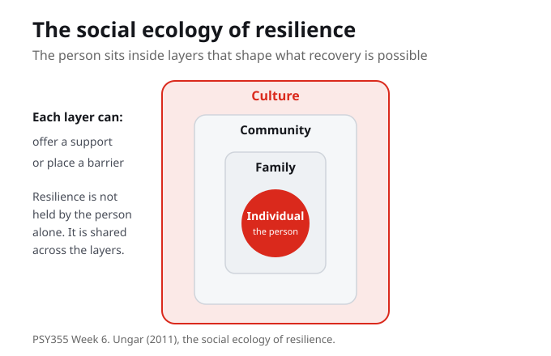
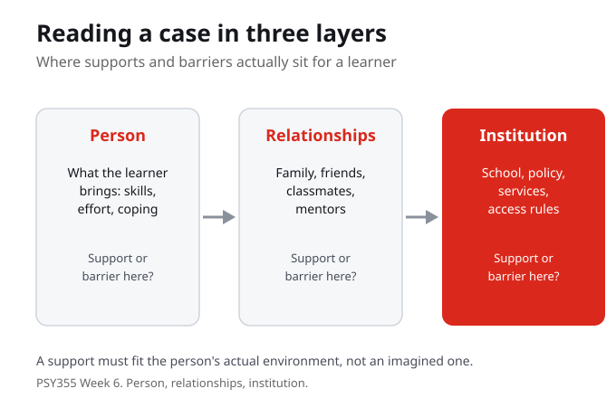

1. Social ecology, in this week, is best described as:
2. The central question this week asks you to notice:
3. A contextual barrier is:
4. Cultural fit, as used this week, means:
5. When the course widens from individual coping to environments, it is saying that resilience is:
6. A useful way to analyse a learning case this week uses three layers:
7. Telling a struggling student to just be resilient can be a problem because:
The purpose of this week is to connect psychological theory to practical learning, well being, and resilience. The work stays grounded in course sources and uses everyday academic examples so the concepts can travel beyond class.
By the end of this week you should be able to

The course widens from individual coping to the environments that shape recovery and well being. Social ecology means the layers around a person: family, school, community, and culture. Those layers change what resilience looks like, because each one can offer a support or place a barrier. Resilience is not held by the person alone; it is shared across the layers that surround them.
Social ecology names the layers around a person, family, school, community, and culture. Resilience is not held by the person alone; it is shared across the layers that surround them.
When you picture someone described as resilient, which layers around them are helping that you do not usually see?
The central question this week is who gets called resilient, and what context is being ignored when that label is used. The label can quietly credit the person while hiding the family, school, community, or cultural support that made recovery possible. It can also hide the barriers a person is carrying. Naming the context does not take anything away from the person. It tells the fuller story.
The resilient label can credit the person while hiding the supports that made recovery possible, or the barriers a person is carrying. Naming the context tells the fuller story.
Who in your own life was called resilient when the real difference was a support around them?

A contextual barrier is an obstacle in the person's environment, not a personal failing. When family, school, community, and culture change what resilience looks like, the same effort can meet very different conditions. To analyse a learning case, look at three layers: the person, their relationships, and the institution around them. In each layer, ask where a support exists and where a barrier is present, so difficulty is not mistaken for personal weakness.
A contextual barrier is an obstacle in the environment, not a personal failing. Reading a case in three layers, person, relationships, and institution, separates a real barrier from personal weakness.
Pick a learning case and name one barrier at each layer: person, relationships, institution.
Cultural fit means a support works because it fits the person's actual culture and environment, not an imagined one. A support that ignores the person's real conditions can miss, even when it is offered with good intentions. Family, school, community, and culture each shape what counts as help. So the test of a support is not only whether it sounds good, but whether it fits the environment the person is actually living in.
Cultural fit means a support works because it fits the person's actual environment, not an imagined one. A support that ignores real conditions can miss, even when it is well intended.
Think of a support that was offered to you that did not fit your real situation. What would have fit?
Telling a struggling student to just be resilient can leave out the support that is actually missing. The phrase places the whole burden on the person and treats the environment as if it were fixed and fair. Once you read resilience as social ecology, the more useful move is to ask what support is absent, in the family, the school, the community, or the culture, and whether a realistic action could change that, without pretending the barrier is simple.
Just be resilient can leave out the support that is missing and place the whole burden on the person. The better move is to ask what support is absent and whether a realistic action could change it.
What kind of support is missing when people tell students to just be resilient?
The course widens from individual coping to the environments that shape recovery and well being. Family, school, community, and culture change what resilience looks like, so resilience is not held by the person alone. It is shared across the layers that surround them.
The central question is who gets called resilient, and what context is being ignored when that label is used. The label can credit the person while hiding the supports that made recovery possible, or the barriers a person is carrying. Naming the context tells the fuller story.
A contextual barrier is an obstacle in the person's environment, not a personal failing. Reading a learning case in three layers, person, relationships, and institution, helps you see where a support exists and where a barrier is present, so difficulty is not mistaken for personal weakness.
Cultural fit means a support works because it fits the person's actual culture and environment. A support that ignores real conditions can miss, even when it is well intended. So the question is not only whether help sounds good, but whether it fits the environment the person is living in.
Last week framed resilience as a process rather than a personality, naming disruption, response, support, and reintegration. That move already pointed past the individual toward the supports that make recovery possible, rather than treating resilience as a fixed personal trait.
This week widens the frame to context and culture through Ungar's social ecology of resilience. Family, school, community, and culture shape what resilience looks like, so the question becomes who gets called resilient and what context is being ignored when that label is used.
Once resilience is read as social ecology, the course turns to stress, adversity, and recovery, separating the pressure a person meets from the response they make and the support they can reach, so difficulty is not mistaken for personal weakness.
What kind of support is missing when people tell students to just be resilient? Pick a learning situation, name a barrier at the level of the person, their relationships, and the institution around them, and describe one realistic support that would actually fit that environment.
Your notes save automatically on this device and stay after you close your browser or shut down. Use Save my notes (below) to download a copy you can keep or open on another device.
What does it mean to read resilience through social ecology?
The central question of the week asks you to notice:
A contextual barrier is best described as:
Why must a support fit the person's actual environment?
Read Ungar (2011) and Ungar (2013) for resilience as a contextual and cultural process. Mark one sentence that helps explain who gets called resilient and what context is being ignored when that label is used.
Read Antony (2022) on framing childhood resilience through ecological systems and Lopez (2021) on the social ecology of childhood and early life adversity. Notice how adversity is treated as social ecology rather than individual weakness.
Take a non private learning case and analyse it using person, relationships, and institution. In each layer, name one contextual support and one contextual barrier, then describe a support that would fit the person's actual environment.
Ungar, M. (2011). The social ecology of resilience: Addressing contextual and cultural ambiguity of a nascent construct. American Journal of Orthopsychiatry, 81(1), 1 to 17.
Ungar, M. (2013). Resilience, trauma, context, and culture. Trauma, Violence, and Abuse, 14(3).
Antony, E. M. A. (2022). Framing childhood resilience through Bronfenbrenner's ecological systems theory: A discussion paper.
Lopez, M., Ruiz, M. O., Rovnaghi, C. R., Tam, G. K. Y., Hiscox, J., Gotlib, I. H., Barr, D. A., Carrion, V. G., and Anand, K. J. S. (2021). The social ecology of childhood and early life adversity. Pediatric Research.